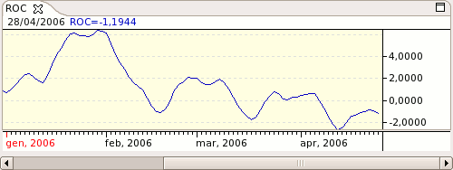

Rate of Change is a simple momentum indicator calculating the rate at which the price changes over a specified period of time.
Uses the division method for comparing the price with that of the last period.
Use several momentum indicators for various time spans.
Above equilibrium: greater than this time last period. Below equilibrium: less than this time last period.
Rising momentum: bullish, expanding. Declining momentum: bearish.

Parameters